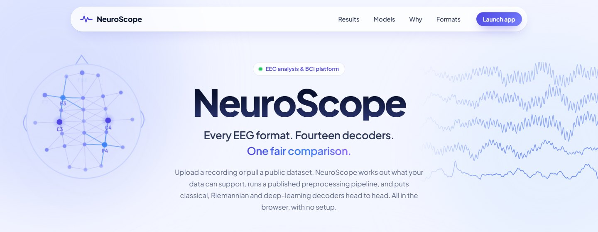
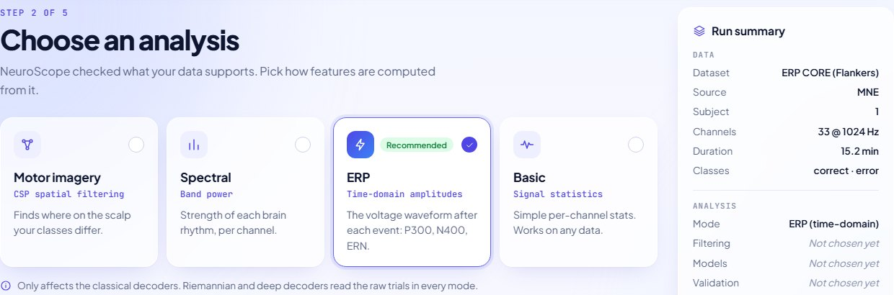
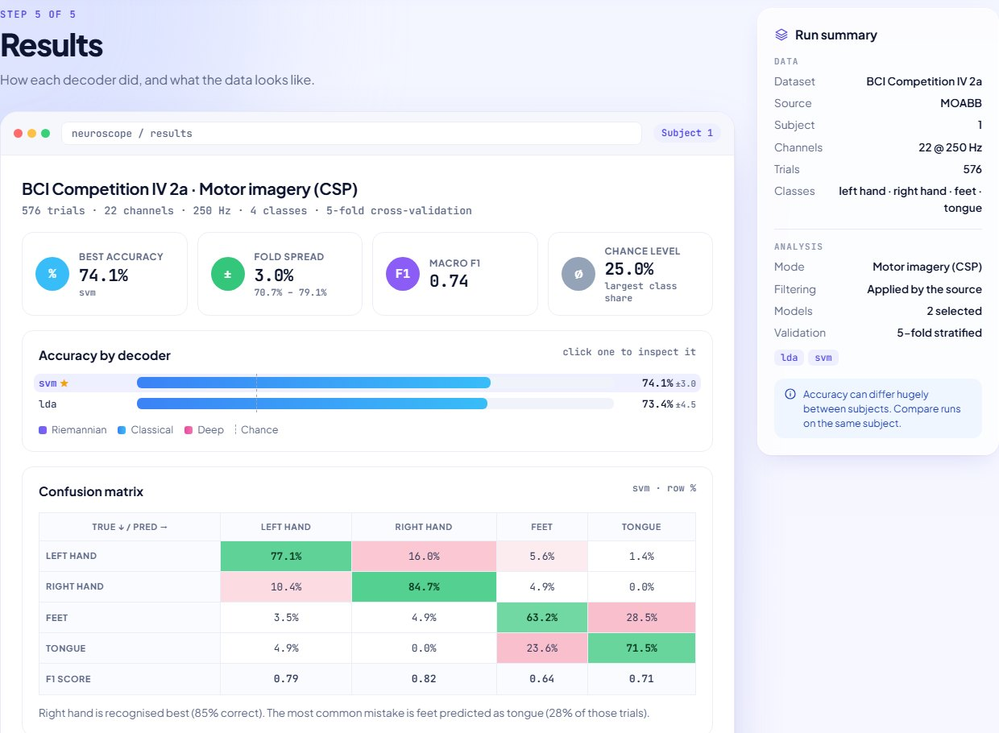
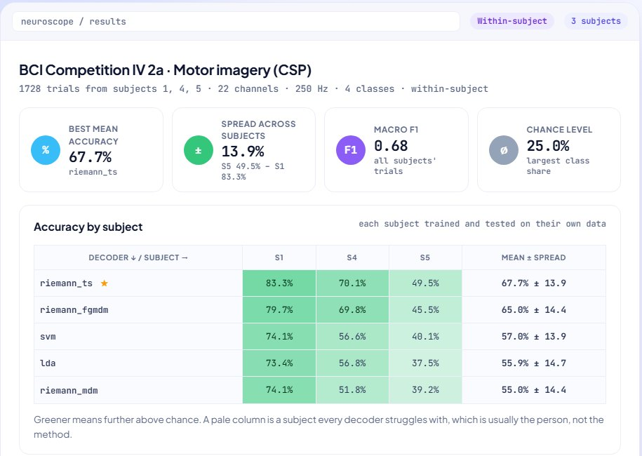
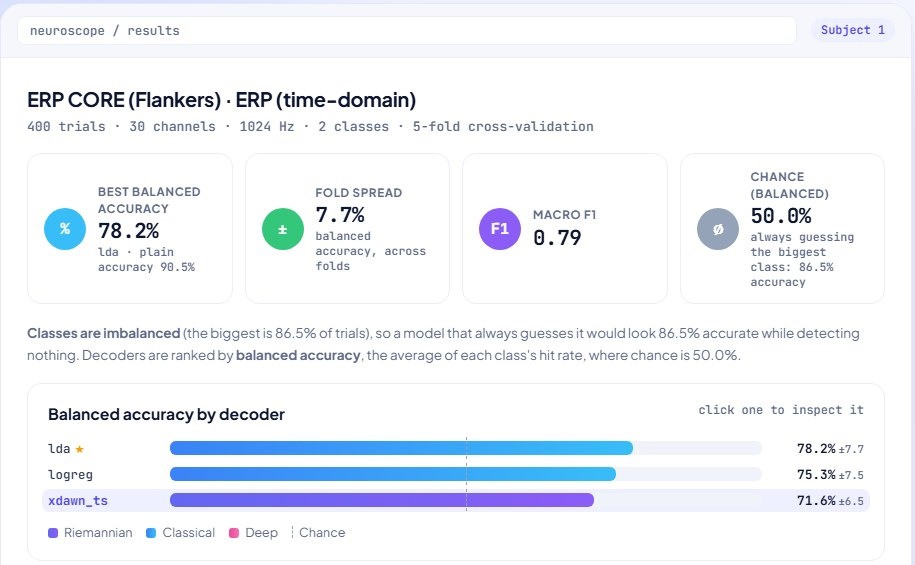
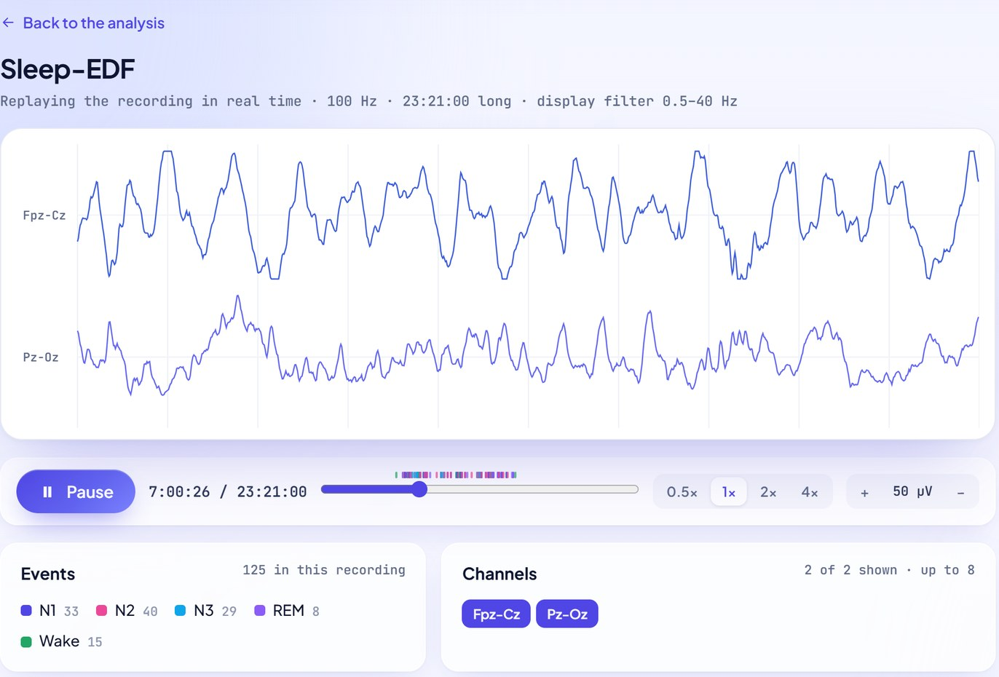

NeuroScope
A web platform for EEG analysis. You upload a recording or pull a public dataset, and the backend works out what analysis the data supports. It runs a preprocessing pipeline taken from the dataset's published methods, then puts 14 decoders head to head with leakage-safe cross-validation, on one subject or across a group. You can also replay a recording as a live, scrolling EEG trace.
- When
- Jun 2026 – present
- Type
- Personal project
- Role
- Solo, full stack
- Earlier name
- EEG AIO

The tool I wished I'd had
I built two EEG devices before this, and both times I hit the same problems off the board. Every dataset came in a different format, I rebuilt every pipeline from scratch, and there was no easy way to compare classifiers fairly.
NeuroScope puts that whole workflow into one app. It also leads into my Spring 2027 Independent Study, which compares EEG foundation models against the same kinds of classical and compact decoders NeuroScope runs.
Five steps, from file to results
A wizard goes from loading data to choosing an analysis, preprocessing, picking decoders and reading the results. A summary panel on the right keeps track of every choice. Every default is filled in from a published pipeline, and you can change any of them.


How it fits together
It reads the data first
When a recording loads, a detector inspects its channels, montage and event markers. It then offers only the analysis modes the data can support. For example, CSP needs the motor channels C3 and C4, and an ERP analysis needs event markers.
Known public datasets get preprocessing presets taken from their published pipelines. Unknown uploads fall back to generic defaults for each mode. You can override every value, and the UI shows which values came from a preset.
Long work runs in its own process
Downloads and training runs go to a background job in a separate process, and the page polls its progress ("Training riemann_ts (3 of 5)"). An early version ran them inside the web request. One stalled download could then lock up a server worker for good, ignoring Ctrl+C, because it was stuck in a C-level socket read.
A separate process can always be killed. Every job has a timeout and a Cancel button, and both stop the whole process tree. Sessions are small JSON records on disk, so they survive server restarts.
Three families, one fair comparison
- No leakage. CSP and feature scaling sit inside a scikit-learn pipeline, so each cross-validation fold fits them on its own training trials only. Fitting CSP on the whole dataset first is a common mistake that inflates accuracy. A test checks that CSP is fitted on exactly the training-fold trials.
- Out-of-fold predictions for every trial. They give the per-fold scores and the confusion matrix from a single pass.
- Failure isolation. If one model crashes, it reports its error and the other 13 still finish.
Matching the published numbers
This run used BCI Competition IV 2a (BNCI2014_001), subject 1. There are four imagined movements (left hand, right hand, feet and tongue), so chance is 25%. It used 576 trials, 22 channels, 5-fold cross-validation and the default settings.
| Classifier | Accuracy | Family |
|---|---|---|
| Riemannian tangent space | 83.3% ± 3.3 | Riemannian |
| FgMDM | 79.7% ± 3.0 | Riemannian |
| xDAWN + tangent space | 75.7% ± 4.9 | Riemannian |
| MDM | 74.1% ± 1.9 | Riemannian |
| CSP + SVM | 74.1% ± 3.0 | Classical |
| CSP + LDA | 73.4% ± 4.5 | Classical |
| EEGNet | 71.9% ± 4.6 | Deep |
This is the order the literature predicts at this sample size. Riemannian methods lead, CSP methods trail, and EEGNet has too little data to pull ahead.
Results vary a lot between people
The same pipeline that gets 83% on subject 1 gets about 50% on subject 5. A single-subject number says little on its own, so NeuroScope can run a group of subjects in two ways:
- Within-subject. Each person is trained and tested on their own data, and the app reports the mean ± spread across the group. This is how most BCI papers report results.
- Cross-subject. Leave one subject out: train on everyone else, test on the person the model has never seen. It asks whether a BCI could work with no calibration. CSP is refit inside every fold, so the held-out person never leaks into training.
Cross-subject accuracy drops much closer to chance, which is the known hard problem. Re-centering each person's covariance matrices before training (Zanini et al., 2018) is the standard fix, and it's next on the list.

When 90% accuracy means nothing

ERP mode classifies the brain's voltage response after each event, such as the P300 or the error-related negativity. The features are the mean amplitude in 50 ms bins on each channel, read by shrinkage LDA, following Blankertz et al. (2011).
The flanker task taught me something. People rarely make mistakes, so 86.5% of trials are "correct". A model that never detects an error scores 86.5% accuracy. LDA's plain accuracy of 90.5% looks great but is barely above that.
When the classes are imbalanced, the app now switches to balanced accuracy: the average of each class's hit rate, where chance is 50% for two classes. It explains why on the page. On that measure LDA scores 78.2%, a real result and an honest one.
Watching a recording play back
Any continuous public recording can be replayed as a live, scrolling multi-channel trace, like an EEG monitor. Event markers (a cue, a sleep stage) appear as they happen. You can change the speed from 0.5× to 4×, the gain and the channels shown, and seek to any point.
The server streams frames over Server-Sent Events, 25 times a second and paced to the clock. The browser draws them on a canvas. When you seek, the server first sends the preceding 10 seconds in one burst, so the trace jumps straight to the new point instead of redrawing from an empty screen.
Why replay first
Live decoding on incoming data needs the same streaming path underneath. Building playback first on public recordings (an overnight Sleep-EDF night, PhysioNet motor imagery) gets the streaming right before uploads and real-time classification are added on top.

Bugs worth writing down
What it reads
Working
- EDF, BDF and GDF recordings
- FIF files, raw or already epoched (epoched data skips preprocessing)
- BIDS datasets, uploaded as a ZIP
- Public datasets from MNE, MOABB and braindecode: BCI Competition IV 2a, PhysioNet motor imagery, Sleep-EDF, ERP CORE and more
In progress
- BrainVision and CSV/TSV files (beta)
- MATLAB
.matfiles: the backend works, but a variable picker is still needed - Playback for uploaded files
What's next
A public demo people can try from this page. Then cross-subject alignment, to close the gap when testing on someone new, and live decoding on top of playback: the classifier labels the recording as it scrolls past, the way a real-time BCI would.
- Python
- FastAPI
- Server-Sent Events
- multiprocessing
- MNE-Python
- MNE-BIDS
- MOABB
- scikit-learn
- pyRiemann
- PyTorch
- braindecode
- EEGNet
- pytest
- React
- Vite
- Recharts
- Canvas
- matplotlib